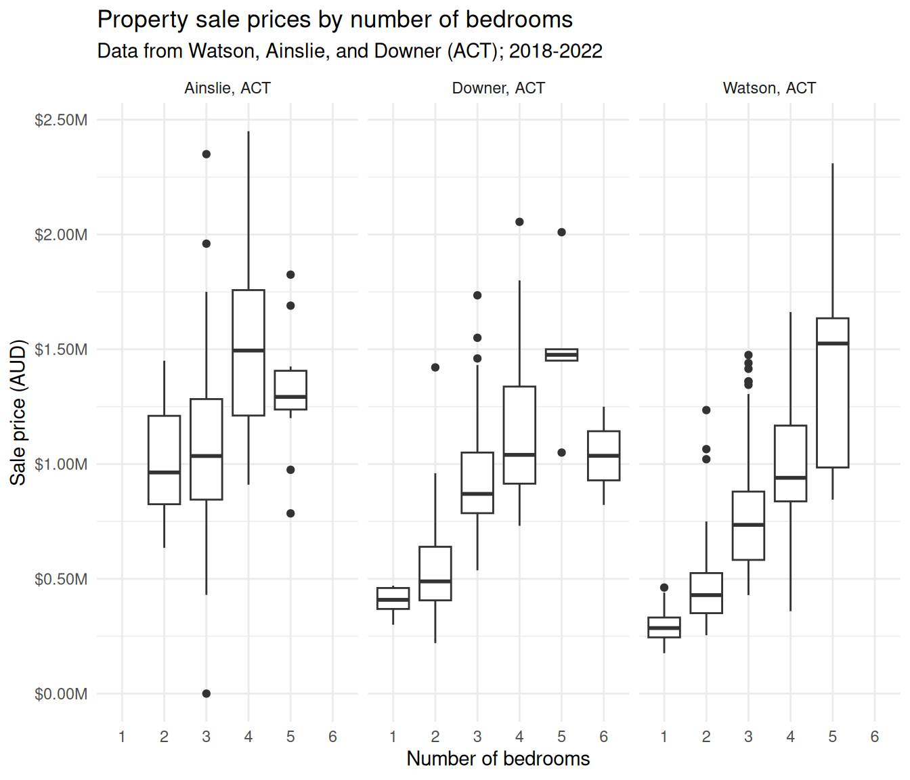

Analysing property prices by number of bedrooms in North Canberra suburbs
Introduction
This vignette demonstrates how to use the allhomes package to extract and analyse historical property sales data from allhomes.com.au. We’ll focus on exploring the relationship between property prices and the number of bedrooms in three northern Canberra suburbs: Watson, Ainslie, and Downer. By analysing sales data from 2018 to 2022, we’ll create visualisations to understand price distributions across different bedroom counts.
The allhomes package provides access to detailed sales data, including property features, sale prices, and dates. This example shows how to collect data for multiple suburbs and years, clean it, and perform basic exploratory data analysis.
Setup
First, load the required packages. We’ll use allhomes for Allhomes sales data extraction and tidyverse for data manipulation and visualisation.
Data collection
The get_past_sales_data() function retrieves sales data for a specific suburb and year. We’ll collect data for three suburbs over five years (2018-2022) using a nested purrr::map_dfr approach.
# Define suburbs and years
suburbs <- c("Watson, ACT", "Ainslie, ACT", "Downer, ACT")
years <- 2018L:2022L
# Collect data using nested map_dfr
data <- suburbs |>
map_dfr(function(burb)
map_dfr(years, function(yr)
get_past_sales_data(burb, yr) |>
mutate(suburb_name = burb, sale_year = yr)))
# Check the structure of the collected data
glimpse(data)
#> Rows: 1,866
#> Columns: 24
#> $ contract_date <date> 2018-12-17, 2018-10-18, 2018-11-12, 2018-11-02…
#> $ address <chr> "39/215 Aspinall Street", "13/21 Aspinall Stree…
#> $ division <chr> "Watson", "Watson", "Watson", "Watson", "Watson…
#> $ state <chr> "ACT", "ACT", "ACT", "ACT", "ACT", "ACT", "ACT"…
#> $ postcode <chr> "2602", "2602", "2602", "2602", "2602", "2602",…
#> $ url <chr> "https://www.allhomes.com.au/unit-39-215-aspina…
#> $ property_type <chr> "TOWNHOUSE", NA, NA, NA, "APARTMENT", NA, "UNIT…
#> $ purpose <chr> NA, "MULTIPLE UNIT DWELLING", "SINGLE RESIDENTI…
#> $ bedrooms <int> 3, NA, NA, NA, 2, NA, 1, 2, 3, 3, 4, 3, 4, 4, 3…
#> $ bathrooms <int> 2, NA, NA, NA, 2, NA, 1, 2, 2, 2, 3, 1, 2, 2, 2…
#> $ parking <int> 2, NA, NA, NA, 2, NA, 0, 2, 2, 2, 2, 2, 2, 2, 2…
#> $ building_size <int> NA, NA, NA, NA, NA, NA, NA, 0, NA, NA, 0, NA, 2…
#> $ block_size <int> NA, 17228, 680, 2302, 20536, 830, 4365, 20536, …
#> $ eer <dbl> 3.0, NA, NA, NA, 5.0, NA, 5.0, 4.0, 3.0, 3.0, 6…
#> $ list_date <date> 2018-11-28, NA, NA, NA, 2018-08-22, NA, 2018-1…
#> $ transfer_date <date> NA, 2018-12-17, 2018-12-17, 2018-12-17, 2018-1…
#> $ days_on_market <int> 19, NA, NA, NA, 82, NA, 29, 43, 34, 155, 23, 23…
#> $ label <chr> "Sold", "Sold", "Sold", "Sold", "Sold", "Sold",…
#> $ price <int> 595000, 516000, 715000, 368000, 360000, 760000,…
#> $ agent <chr> "Independent Gungahlin", NA, NA, NA, "Sadil Qui…
#> $ unimproved_value <int> NA, NA, NA, NA, NA, NA, NA, NA, NA, 567000, 557…
#> $ unimproved_value_ratio <dbl> NA, NA, NA, NA, NA, NA, NA, NA, NA, 0.7105263, …
#> $ suburb_name <chr> "Watson, ACT", "Watson, ACT", "Watson, ACT", "W…
#> $ sale_year <int> 2018, 2018, 2018, 2018, 2018, 2018, 2018, 2018,…Data exploration
Let’s examine the collected data. We’ll look at the total number of sales, data completeness, and basic statistics.
# Summary statistics
data %>%
group_by(suburb_name, sale_year) |>
summarise(
total_sales = n(),
sales_with_bedrooms = sum(!is.na(bedrooms) & bedrooms > 0),
sales_with_price = sum(!is.na(price) & price > 0),
median_price = median(price, na.rm = TRUE),
.groups = "drop") |>
knitr::kable(caption = "Summary of sales data by suburb and year")| suburb_name | sale_year | total_sales | sales_with_bedrooms | sales_with_price | median_price |
|---|---|---|---|---|---|
| Ainslie, ACT | 2018 | 68 | 44 | 67 | 1067500 |
| Ainslie, ACT | 2019 | 72 | 37 | 70 | 900000 |
| Ainslie, ACT | 2020 | 64 | 35 | 64 | 1170000 |
| Ainslie, ACT | 2021 | 88 | 32 | 88 | 1325000 |
| Ainslie, ACT | 2022 | 65 | 25 | 64 | 1570000 |
| Downer, ACT | 2018 | 73 | 51 | 73 | 793000 |
| Downer, ACT | 2019 | 68 | 44 | 68 | 795000 |
| Downer, ACT | 2020 | 71 | 45 | 71 | 800000 |
| Downer, ACT | 2021 | 126 | 34 | 126 | 709900 |
| Downer, ACT | 2022 | 87 | 49 | 86 | 1238000 |
| Watson, ACT | 2018 | 149 | 121 | 149 | 520000 |
| Watson, ACT | 2019 | 162 | 117 | 162 | 613000 |
| Watson, ACT | 2020 | 265 | 108 | 265 | 530000 |
| Watson, ACT | 2021 | 273 | 112 | 273 | 570000 |
| Watson, ACT | 2022 | 235 | 97 | 234 | 600000 |
Price analysis by bedrooms
Now we’ll analyse how property prices vary with the number of bedrooms. We’ll filter for valid data and create a boxplot to visualise price distributions.
# Filter and prepare data for plotting
plot_data <- data |>
filter(
!is.na(bedrooms), bedrooms > 0, bedrooms <= 6, # Reasonable bedroom range
!is.na(price), price > 0, price < 10e6) # Reasonable price range
# Create boxplot
plot_data |>
ggplot(aes(x = as.factor(bedrooms), y = price)) +
geom_boxplot() +
scale_y_continuous(
labels = scales::label_dollar(scale = 1e-6, suffix = "M")) +
facet_wrap(~ suburb_name) +
labs(
title = "Property sale prices by number of bedrooms",
subtitle = "Data from Watson, Ainslie, and Downer (ACT); 2018-2022",
x = "Number of bedrooms",
y = "Sale price (AUD)") +
theme_minimal()
Insights
From the visualisation, we can observe:
- Price trends: Generally & unsurprisingly, properties with more bedrooms result in higher sale prices, though there exists significant variation within each category.
- Suburb differences: Price distributions vary between suburbs, reflecting local market conditions.
- Data considerations: Not all sales records include bedroom information, and some outliers may affect the distributions.
This analysis provides a starting point for deeper exploration. Potential extensions could include:
- Analysing price per bedroom
- Examining trends over time
- Including additional property features like bathrooms or land size